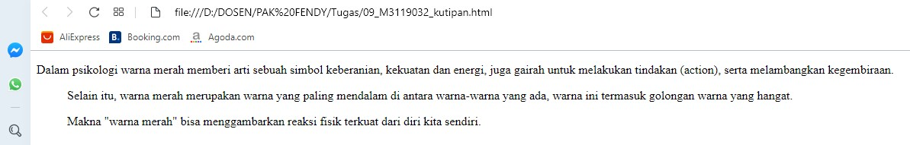

Membuat Kutipan (Quotes)
Tag blockquote digunakan untuk bagian text yang merupakan kutipan panjang.
Disebut kutipan panjang karena tag ini merupakan tipe block element, sehingga akan memisahkan diri
dari text yang ada menjadi baris baru. Tag blockquote lebih cocok digunakan untuk memberikan penegasan
penting untuk kutipan.
Codingan
<!DOCTYPE html>
<html>
<head>
<title>Membuat Kutipan (Quotes)</title>
</head>
<body>
<p>
Dalam psikologi warna merah memberi arti sebuah simbol keberanian, kekuatan dan energi,
juga gairah untuk melakukan tindakan (action), serta melambangkan kegembiraan.
</p>
<blockquote cite="https://www.google.com/url?sa=t&rct=j&q=&esrc=s&source=web&cd=1&cad=rja&uact=8&ved=2ahUKEwiYv5fF3-znAhVzzzgGHbPhDr8QFjAAegQIBRAB&url=https%3A%2F%2Fplus.kapanlagi.com%2Farti-warna-dalam-psikologi-coba-cari-makna-di-balik-warna-favoritmu-number-aa05f5.html&usg=AOvVaw2Z0iUCR1FpQy8cDfEljnRL&cshid=1582635223992233">
Selain itu, warna merah merupakan warna yang paling mendalam di antara
warna-warna yang ada, warna ini termasuk golongan warna yang hangat.
</blackquote>
<p>
Makna <q>warna merah</q> bisa menggambarkan reaksi fisik terkuat dari diri kita sendiri.
</p>
</body>
</html>
Hasil codingan

Analisis
Pada gambar diatas menggunakan perintah blockquote yaitu kutipan yang diletakkan dalam blok
tersendiri (tidak dalam satu paragraf dengan teks lain). Sedangkan untuk membuat inline quote seperti pada
gambar diatas pada kalimat warna merah
.
Back